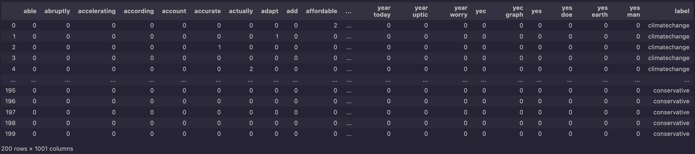

Naive Bayes
Naive Bayes
Naive Bayes is a family of probabilistic algorithms based on Bayes' theorem, used for classification tasks. The Multinomial Naive Bayes variant is usually particularly effective for text classification, where the features are the frequencies of words in the documents.
Family!?
Yes, there are four useful, awesome, very different Naive Bayes' algorithms:
- Gaussian Naive Bayes: Assumes that the features follow a Gaussian (normal) distribution.
- Multinomial Naive Bayes: Suitable for discrete data, such as word counts in text classification.
- Bernoulli Naive Bayes: Similar to Multinomial Naive Bayes but assumes binary features (presence/absence of words).
- Complement Naive Bayes: A variant of Multinomial Naive Bayes that is designed to correct the "severe assumptions" made by the standard Multinomial Naive Bayes algorithm.
Data Formatting for Naive Bayes
To perform Naive Bayes classification, the data must be preprocessed and formatted. This involves tokenizing the text, removing stop words, and creating a document-term matrix.
I used my favorite Vectorizer for this, CountVecotrizer and Term Frequency Interdocument Frequency (TF-IDF)from sklearn!
Here is how I programmatically, relabeled and formatted my data. Originally, from the raw json I had collected in the data tab from reddit:
Here is an example of how the data looks:
As you'll notice on the right hand-side, there are two labels climate change and conservative, these labels were determined based on what subreddit the comment or in this document-term set up, row. This means that each row in the dataframe is comment posted within that subreddit channel.
With supervised machine learning, we need to split the data up into four categories, training data, testing data, and the associated labels for both training and testing.
Here is how I did that(sklearn):
Naive Bayes Classifier
The Naive Bayes classifier is trained on the document-term matrix and the corresponding labels. The model learns the probabilities of each word given a class label, allowing it to (not really) make predictions on unseen data.
Here is my confusion matrix:

As you can see, the model is not performing well. The accuracy is low, and the confusion matrix shows that the model struggles to distinguish between the classes.
You might be wondering, how does one read a confusion matrix.
In a confusion matrix, the rows represent the true classes, while the columns represent the predicted classes. The diagonal elements indicate correct predictions, while the off-diagonal elements indicate misclassifications.
For a more in-depth reading of this try out the great Geeks for Geeks article below:
Confusion Matrix - Geeks for GeeksWith my hope, not yet diminsioning, I attempted some hyperparameter tuning, or changing diminutive 'settings' with in the statistical model to tweak the way that the model responds to new data.
I trained a different multinomial naive bayes model, this time using Count Vecotrized words (as opposed to using TF-IDF) and I opted to use a Laplace smoothing parameter.
Here is my confusion matrix:

As you can see our correct, climate change for climate change integer increased by one, meaning that our accuracy increased from a whopping 12% to 15%.
I printed out the 50 most important features that were used for this multinomial naive bayes (mis)classification, here is what they look like:

These features do have to do with the topic of climate related words. Even our bigrams are coming through, I added bigrams in later that improved some of our classification because it retains a teensy bit of context for the algorithm to model. 'Climate Hoax' and 'Believe Climate' have two very different connotations, these cannot be captured in single word vectorizations.
In conclusion, the Naive Bayes classifier is a simple yet effective algorithm for text classification tasks. However, its performance can be limited by the assumptions it makes about the data. In this case, the model struggled to capture the complexities of the text data, leading to low accuracy.
In my previous experiences with Naive Bayes working with human text data, it performs really well.
look at my code and data collected on my github here:
GitHub Code